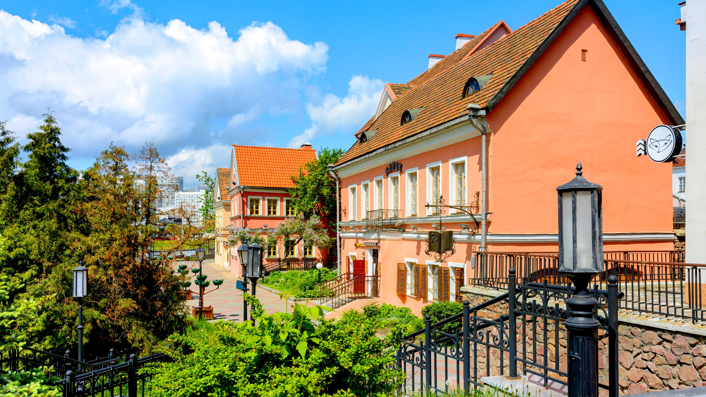
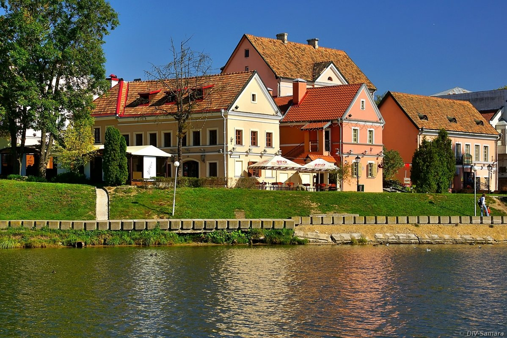

.
Троицкое предместье

Поселение Троицкая гора возникло в ХII-ХIII веках на возвышенности у реки
Свислочь. По разным версиям, название происходит от древнейшего Троицкого
костела, основанного великим князем Ягайло, или оборонительного редута
Святой Троицы, или церкви Святой Троицы. В древние времена предместье было
торговым центром, где пересекались дороги из Вильно, Полоцка, Смоленска,
Могилева, а с конца ХVI века здесь располагалась крупнейшая торговая
площадка города – Троицкий рынок. В XV-XVII веках Троицкую гору, Нижний
рынок и Раковское предместье окружали крепостные сооружения. Предместье
было застроено деревянными домиками, в которых жили ремесленники,
торговцы, крестьяне и военные.Древняя планировка предместья исчезла в 1809
году во время большого пожара и восстановлена уже в камне по проекту,
утвержденному императором Александром I. В 30-60-е годы ХХ века были
разрушены отдельные строения предместья и целые улицы. В 1980-х годах в
Троицком предместье и Верхнем городе были проведены реставрационные работы
по воссозданию архитектурного облика Минска XIX века.

В 2004 году в соответствии с указом Президента Беларуси утверждены границы
исторического центра и концепция его реконструкции. Троицкое предместье
было включено в комплекс Старого города, под особую охрану взята западная
часть предместья. После реставрации она превратилась в естественный музей
под открытым небом, где можно увидеть здания каменной застройки.В 2009
году сквер, где столетия назад находился рынок, получил историческое
название Троицкая гора. Сегодня во многих домах Троицкого предместья
размещаются музеи, антикварные и сувенирные лавки, кофейни и рестораны,
художественные галереи. Кроме того, сейчас продолжается воссоздание
исторического облика Троицкого предместья и восстановление утраченных
построек Верхнего города, а также одного из главных объектов исторического
центра – Минского замчища.